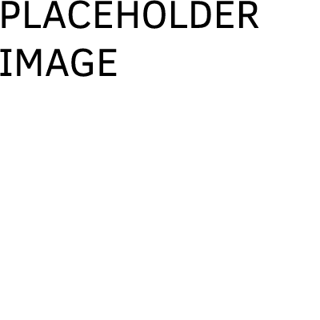

To explain, let me quickly introduce an app called Slack.

Let us figure out how to solve the problems of open and closed media.
Out of the two apps we talked about, which app's company do you think we should follow to fix these issues?
ResponseText
ResponseText
To explain, let me quickly introduce an app called Slack.
They make an app similar to Discord, but geared for workplaces.
What matters, though, is their design philosophy. The company “asks designers to close their eyes and imagine what a person might have experienced in their life before sitting down at their desk” (Wachter-Boettcher 190).
In other words, they want developers to design with the user in mind.
And, well, it works! It's an amazing app.  GREAT THINGS or REVIEW ABOUT SLACK
ResponseText
Discord changed their logo and branding a couple years ago. This was when they doubled down on improving the user experience.
They created or improved several crucial functions, including:
You could tell they wanted to make users happy. And it worked.
Into the lockdown, Discord was able to be a cozy, online home for millions of teenagers.
There were no tricks. People used Discord for its purpose. They had the freedom to decide their time spent online, and it was very much possible to be a healthy user there.
What did Discord get in return?
(A massive boost in relelvance and revenue. That's a win!)
ResponseText
The more companies make this change, the closer we get to full control of our social media usage.
We will finally be able to take screen time advice, like those PSAs that warn against spending too much time online".
With no algorithms or bad design choices trying to hook us, we have control of our time online
That is what we are missing. Once prevalent in the social media we use, both open and closed, it becomes possible.
We can finally strike the delicate balance necessary for healthy social media usage.